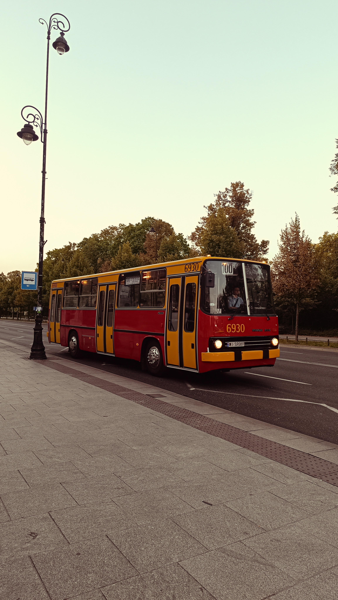

Portrait • Landscape • Street • Travel • Events





Hello, I'm Aby Saji, a photographer passionate about capturing authentic moments, landscapes, and stories through my lens. My work focuses on creating timeless images that evoke emotion and preserve memories.
Email: happytrailevents.pl@email.com
Instagram: @vintage__hunter